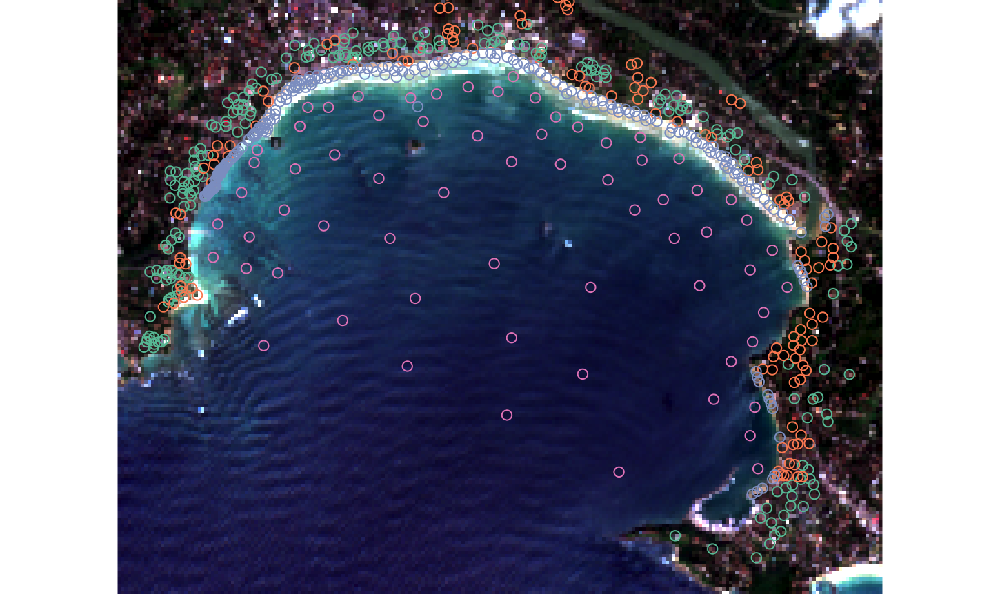

book
ZURICH UNIVERSITY OF APPLIED SCIENCES
DEPARTMENT LIFE SCIENCES AND FACILITY MANAGEMENT
INSTITUTE FOR COMPUTATIONAL LIFE SCIENCE
Monitoring of coastal changes using satellite imagery: A case study of Unawatuna
Project Work 2
by
Meggie Krymowski
BSc Applied Digital Life Sciences 2022
12.12.2024
Corrector:
Nils Ratnaweera
1 Introduction
Coastal areas, where land meets the sea, are dynamic environments shaped by the continuous interaction of natural forces such as wind and waves (Publishers 2000). These forces contribute to the erosion and construction of geographical features like beaches, dunes and lagoons, resulting in constantly changing coastal landscapes (Weerasingha and Ratnayake 2022). These transitional areas are characterized by high biodiversity and include fragile ecosystems like mangroves and coral reefs. However, they are also under significant pressure from urbanization and human activities, with more than half of the global population residing near coastlines. Coastal areas are among the most visited regions worldwide, with tourism being a major economic driver in many locations. These factors collectively contribute to the rapid transformation of coastal landscapes (Wasana 2018).
Unawatuna, situated on the southwestern coastline of Sri Lanka, is an iconic beach known for its unique semicircular shape, ecological richness, and popularity among tourists. It has been recognized internationally as one of the most attractive beaches in the world, featuring activities such as snorkeling, diving, and whale watching, as well as hosting diverse ecosystems, including coral reefs and mangroves. These natural and cultural assets make Unawatuna a vital area for tourism and local livelihoods (Rathnayake 2015). However, the impacts of erosion, seasonal fluctuations, and human activities, especially those associated with tourism, have raised concerns about the long-term stability and preservation of Unawatuna Beach. Traditional monitoring methods, such as field surveys, are often resource-intensive and may not provide consistent or comprehensive data over time (Silveira et al. 2013). Satellite imagery offers a promising alternative for addressing these challenges, enabling large-scale and cost-effective monitoring of beach changes. This project focuses on this questions:
What methodology would be capable of reliably monitor and quantify sand dune fluctuations along the Sri Lankan coastline?
What types of publicly available satellite data can be used to observe sand dune fluctuations?
Which free and open-source software tools are best suited for analyzing satellite data to monitor sand dune fluctuations along the Sri Lankan coastline?
How can the accuracy and reliability of the monitoring methods be evaluated?
2 Theoretical Framework
2.1 Understanding satellites: definition and common features
A satellite is an object that orbits around a larger celestial body due to gravitational forces. Natural satellites, such as the Earth orbiting the Sun or the Moon orbiting the Earth, are formed through natural processes and are an integral part of the universe’s structure. These celestial objects differ from artificial satellites, which are human-engineered and serve human-centric purposes.
The term satellite is most commonly associated with artificial satellites mechanisms designed and constructed by humans to perform a variety of tasks. These artificial satellites are launched into orbit around Earth or other celestial bodies to support diverse applications, including communication, Earth observation, navigation, and scientific exploration (Adams, 2017). Their versatility and functional diversity make them invaluable tools for advancing scientific knowledge, technological progress, and global connectivity.
Despite their varied applications, all satellites share fundamental operational features. A primary requirement is a reliable power source, typically solar panels, combined with a storage battery to ensure uninterrupted operation during periods without sunlight. As solar irradiance decreases proportionally to the square of the distance from the Sun (or any spherical source), it quickly becomes insufficient for powering satellites far beyond Earth’s orbit. Consequently, satellites operating at greater distances from the Sun depend on radioisotope thermoelectric generators (RTGs), which provide both electricity and heat to maintain equipment at operational temperatures (NASA n.d.). These energy systems enable satellites to sustain their core functions, including data acquisition, communication, and maneuvering in orbit. This combination of power, communication, and navigation systems underpins the essential functionality of satellites, making them adaptable to a broad range of tasks in space.
2.2 Publicly available satellite data and platforms for monitoring coastal shoreline dynamics: a comprehensive overview
2.2.1 Copernicus Browser
The Copernicus Browser is a vital online platform providing free and open access to geospatial data and imagery from the European Union’s Copernicus Earth Observation Program, managed by the European Space Agency (ESA). It grants users access to an extensive range of datasets, particularly from the Sentinel satellite constellation, enabling the detailed exploration of Earth’s surface for scientific, environmental, and commercial applications.
The data is available in standard geospatial formats, such as GeoTIFF for raster imagery, ensuring seamless compatibility with geospatial analysis tools like QGIS, R, and Python. Users can download imagery at various resolutions, including 10m, 20m, and 60m, catering to different project requirements and levels of detail (Sinergise Solutions n.d.).
2.2.2 PlanetScope: free access under specific conditions
PlanetScope is a satellite platform operated by the company Planet, featuring a constellation of approximately 130 satellites. This constellation is capable of imaging the entire land surface of Earth every day, covering an impressive 200 million km² per day. The satellite imagery has a resolution of 3 meters per pixel, making it well-suited for detailed environmental and spatial analyses.
A PlanetScope Scene Product represents a single framed image captured as part of the satellite’s continuous line-scan of the Earth’s surface. These scenes are individual segments within a strip of imagery, overlapping with one another, and are not aligned to a specific tiling grid system. This format allows for flexible use, but requires additional processing for some applications.
One of the most remarkable aspects of PlanetScope is its accessibility. The platform offers freely available data samples and provides free access for students, academic researchers, and humanitarian projects through the Planet Education and Research Program (Planet 2024a).
While PlanetScope boasts an impressive daily collection capacity and frequent revisits, its affordability and accessibility are perhaps its most standout features, ensuring that high-quality satellite data is available for a wide range of users and applications.
2.2.3 RapidEye (discontinued in 2020)
RapidEye, a satellite constellation, was in operation from 2009 to 2020 and was developed by the company Planet, which also operates PlanetScope, as mentioned earlier. The constellation consisted of five high-resolution satellites, each capable of capturing imagery with a spatial resolution of approximately 5 meters per pixel (Planet 2024b).
RapidEye’s sensors captured imagery across five spectral bands: Red, Green, Blue, Red Edge, and Near Infrared. This capability made RapidEye highly valuable for applications in agriculture, forestry, and environmental monitoring. Furthermore, more than 70% of the images were acquired with a view angle of less than 10°, with a maximum view angle limited to 20°, ensuring minimal distortion and consistent high-quality data (ESA n.d.).
The extensive archive of RapidEye imagery is available for research and educational purposes upon request, free of charge (Planet n.d.). This historical archive remains a critical resource for studying and analyzing changes in the Earth’s surface over time.
2.3 Free and open-Source software Tools that could be used for monitoring coastal shoreline fluctuations
2.3.1 QGIS: strengths and limitations in geospatial analysis
QGIS (Quantum Geographic Information System) is open-source, cross-platform software for efficient geospatial data management, visualization, analysis, and mapping. It is valued for its accessibility, flexibility, and integration capabilities across various geospatial technologies. One of the primary advantages of QGIS is its cost-effectiveness. As free software, it eliminates the financial barrier associated with many proprietary GIS platforms. It supports a wide range of vector and raster file formats. This compatibility allows users to work with nearly any geospatial data type, including shapefiles and GeoTIFFs (Map-site n.d.).
For temporal or dynamic data, QGIS provides tools like TimeManager, which enables users to visualize changes over time. This is particularly useful for monitoring environmental changes (Map-site n.d.).
QGIS is also highly extensible, offering a vast library of plug-ins to enhance its functionality. These plug-ins allow users to perform specialized tasks, such as georeferencing raster data, creating temporal animations, and automating processes through batch operations. The active development community continuously contributes new plug-ins and updates, ensuring that QGIS remains a dynamic and evolving tool. Another strength of QGIS is its user-friendly interface, which lowers the learning curve for beginners. Tutorials and extensive online resources make it accessible even for users with little to no prior experience in GIS. The software also supports advanced functionality, such as 3D visualization, time-series analysis, and complex spatial queries, making it suitable for both basic and advanced geospatial tasks.
While QGIS is highly versatile, it does have limitations. The software integrates well with external tools, however, machine/deep learning and some other advanced geospatial tasks require additional software. For instance, QGIS does not natively support models like Convolutional Neural Networks (CNNs) or the Segment Anything Model (SAM), which are often essential for tasks like automated object detection and image segmentation in remote sensing (Gillian n.d.).
2.3.2 Geospatial analysis using python libraries
Python provides a comprehensive ecosystem for geospatial analysis, supporting a wide range of workflows, from preprocessing and analyzing raster and vector data to implementing advanced machine learning techniques. Its libraries, such as rasterio, geopandas, and xarray, are designed to handle geospatial data efficiently. For raster data, rasterio allows users to read, write, and manipulate formats like GeoTIFF, while geopandas extends Pandas to support spatial operations for vector data, including spatial joins and reprojections. Additionally, xarray enables the analysis of multidimensional raster datasets, such as time-series or climate data.
Python’s integration with deep learning frameworks, such as TensorFlow and PyTorch, makes it particularly suited for complex geospatial tasks. Convolutional Neural Networks (CNNs) are widely implemented for tasks like land cover classification, object detection, and semantic segmentation. Models such as UNet, optimized for image segmentation, are frequently applied to delineate detailed land use patterns or identify structures in satellite imagery. Python also supports tools like the Segment Anything Model (SAM), which generalizes segmentation tasks across diverse datasets using minimal user input. SAM’s transformer-based architecture allows it to identify features like buildings, vegetation, or land boundaries in high-resolution imagery efficiently. These frameworks leverage GPU acceleration, allowing for the processing of large datasets (Setu et al. 2024).
Visualization is another area where Python offers strengths. Libraries such as folium and plotly enable the creation of interactive maps, while matplotlib and cartopy provide robust tools for static visualizations with geospatial overlays. Python’s ability to connect with cloud-based platforms, such as Google Earth Engine (GEE), further enhances its capacity to process and analyze large-scale geospatial datasets without the need for significant local infrastructure.
However, Python’s complexity can be a drawback. Its workflows often require combining multiple libraries, which can increase development time and lead to steeper learning curves. Additionally, while Python supports high-performance tasks like deep learning, setting up the required environment, including GPU dependencies, can be resource-intensive and technically demanding. For visualization, while Python provides dynamic tools, creating highly customized or publication-quality outputs may require additional effort compared to other geospatial tools (Priyadharshini 2015).
In summary, Python’s geospatial libraries are well-suited for handling raster and vector data, integrating machine learning and deep learning techniques, and supporting cloud-based workflows. While its flexibility and advanced tools provide significant capabilities, they also introduce complexity that may require technical expertise and time to manage effectively.
2.3.3 R for remote sensing: capabilities and limitations
R has become a widely used tool for remote sensing analysis due to its extensive library of packages, its flexibility, and its ability to handle large spatial datasets. Remote sensing involves deriving valuable insights from satellite imagery or other remote platforms, often requiring extensive preprocessing, analysis, and visualization. With specialized packages like terra, sf, and stars, R provides robust solutions for many aspects of remote sensing workflows, from raster data handling to vector geometry operations.
The terra package is a key tool for raster data processing in R, succeeding the raster package with enhanced efficiency for large datasets. Raster data, commonly derived from satellite imagery like Sentinel-2 or Landsat, represents spatially continuous information. With terra, users can manage multi-band rasters, crop to areas of interest, normalize reflectance values, and perform raster algebra for tasks such as NDVI (Normalized Difference Vegetation Index) calculations (Ghosh and Hijmans 2023). Its built-in functions for processing large files without exhausting memory make it particularly suitable for handling data from modern satellite missions, where file sizes can be enormous. It is also Supporting formats like GeoTIFF and JP2 (Wasser 2017).
The sf package complements terra by focusing on vector data, such as points, lines, and polygons, which represent boundaries, infrastructure, or sampling locations. It adheres to the Simple Features standard, enabling seamless work with vector geometries and integration with raster datasets. This allows for workflows like extracting raster values for polygons or performing spatial overlays. The package integrates well with R’s data manipulation and visualization tools, such as dplyr and ggplot2, making it easy to create maps and conduct spatial analysis.
For multidimensional datasets, the stars package offers a specialized approach, particularly for spatiotemporal data. Designed to handle raster cubes with dimensions like time and spectral bands, it is ideal for monitoring changes over time, such as vegetation dynamics or coastal erosion. Stars also integrates with sf for overlaying vector geometries on raster datasets, making it a valuable addition to R’s remote sensing ecosystem, despite being less widely adopted than terra (Ghosh and Hijmans 2023).
When it comes to machine learning, R provides interfaces to frameworks like Keras and TensorFlow, enabling users to build and train neural networks for tasks such as land cover classification or object detection. In addition to these deep learning capabilities, R supports supervised learning models like random forests and support vector machines, as well as unsupervised methods like k-means clustering or hierarchical clustering. These methods are well-suited for tasks such as identifying land use patterns or segmenting satellite imagery based on spectral properties. While R is capable of implementing deep learning models, its adoption for advanced architectures like Convolutional Neural Networks (CNNs) is less common, particularly compared to Python. Unfortunately, tools like SAM are not readily available in R, requiring researchers to rely on Python for these capabilities. Nevertheless, R remains effective for many machine learning tasks in remote sensing, especially when focusing on traditional models and workflows that prioritize statistical and geospatial analysis (Priyadharshini 2015).
Visualization is another area where R shows both strength and limitations. R’s ggplot2 and tmap are exceptional for creating static and high-quality visualizations. However, when it comes to dynamic and interactive visualizations of large datasets, tools like Python’s folium outperform R. While R’s leaflet package does provide interactivity, it lacks some of the advanced features required for visualizing large geospatial datasets interactively (Chege 2024).
In conclusion, R is a powerful tool for remote sensing analysis, offering exceptional capabilities for raster and vector data processing through terra and sf, and advanced spatiotemporal analysis through stars. Its strengths lie in statistical modeling, data visualization, supervised learning, unsupervised learning, and integrating geospatial analysis with dashboards, such as those built with R Shiny. However, tasks involving deep learning workflows or highly specialized models like UNet or SAM are often better handled in Python.
2.4 Panchromatic and pansharpened satellite imagery
Panchromatic and pansharpened satellite imagery are essential tools in remote sensing, offering enhanced capabilities for observing and analyzing Earth’s surface. Panchromatic imagery, often abbreviated as PAN imagery, is a single-channel grayscale image that integrates visible light wavelengths red, green, and blue into a single band. This approach sacrifices spectral detail for improved spatial resolution, making it ideal for capturing fine surface features. The information contained in each pixel of a panchromatic image directly reflects the total intensity of solar radiation reflected by objects within the pixel and detected by the satellite sensor. As a result, PAN imagery provides sharp and detailed images that are highly suitable for spatial analysis (Shanshan 2022).
A panchromatic band by itself produces black and white images with high spatial resolution. For example, satellites like Landsat 7 and 8 offer panchromatic images with a resolution of 15 meters per pixel, which is significantly higher than the 30-meter resolution of their multispectral counterparts. This higher resolution allows panchromatic imagery to assist individual spectral bands by making them "sharper," enhancing the visual and analytical clarity of satellite data (Analytic 2021).
One of the most significant applications of panchromatic imagery is its role in panchromatic sharpening, or pansharpening. This process fuses the high-resolution spatial data from panchromatic images with the spectral information from lower-resolution multispectral images. The resulting pansharpened image combines the best of both worlds: the spatial resolution of the panchromatic image and the spectral richness of the multispectral data. Pansharpening produces high-resolution color images that are more visually detailed and analytically useful for various applications. This fusion process has proven particularly beneficial for mapping land use, monitoring vegetation, and studying urban environments. By enhancing the spatial detail while preserving spectral attributes, pansharpening enables more accurate classification of surface features and clearer delineation of boundaries (McAuliffe 2021).
The process of pansharpening relies on techniques that integrate the complementary strengths of panchromatic and multispectral imagery. Various methods are used, including HSV sharpening and Gram-Schmidt pansharpening. Each method offers specific advantages, depending on the application. For example, HSV sharpening works within the HSV color space, where H stands for hue, S for saturation, and V for value (brightness). In this method, the high-resolution panchromatic data replaces the lower-resolution value component of the multispectral image, while the hue and saturation components remain unchanged. This ensures the resulting image retains its original color characteristics but with improved sharpness and detail derived from the panchromatic band. This approach is straightforward and computationally efficient, making it widely used for applications requiring enhanced visuals (ArcGIS n.d.).
On the other hand, Gram-Schmidt pansharpening is a more complex method that models the panchromatic band as a linear combination of the multispectral bands. This technique simulates a panchromatic band from the spectral information of the multispectral image, aligning it with the actual high-resolution panchromatic data. The simulated and actual data are then fused to create a highly accurate pansharpened image. Gram-Schmidt pansharpening is particularly effective in applications where preserving the spectral integrity of the multispectral data is critical, such as in scientific studies of vegetation health or water quality (ArcGIS n.d.).
3 Methodology
3.1 Area of Interest - spatial and temporal delimitation
The project focuses on a specific area in Sri Lanka, with particular attention to the coastal region of Unawatuna, as shown in Figure 3.1. The spatial delimitation encompasses a defined area within the coordinates, extending approximately from 6.0048°N, 80.2422°E in the southwest to 6.0112°N, 80.2534°E in the northeast. This area was chosen due to the presence of a distinct sandbank, which provides a clear and measurable feature for analysis. The temporal delimitation of this analysis spans a five-year period from 2019 to 2023, with the goal of identifying any changes in the beach during this timeframe.

3.2 Data acquisition
The satellite data for the project was sourced from Sentinel Hub, covering a 5-year period. The data was downloaded as SAFE files, which is the standard format for Sentinel satellite data. Initially, the complete dataset for the region was acquired. In a subsequent step, the data was cropped to focus specifically on the area of interest.
To ensure data quality, it was crucial to select images captured on clear days with minimal cloud coverage over the target beach area. Each image was manually inspected to verify clarity and relevance before being added to the dataset. This approach ensured that the dataset was reliable and suitable for subsequent analysis.
3.3 Data preprocessing challenges
The first step after downloading the satellite images was to manually annotate the data, as no pre-labeled datasets were available, as shown in Figure 3.2. In the absence of preexisting training and testing datasets, manual annotation of the satellite images from Sri Lanka was performed using QGIS.

A GeoPackage layer was created to classify the imagery into four categories: Sand, Buildings, Water, and Forest. These categories were defined based on their distinct spectral levels, which cannot be easily mixed or generalized. By distinguishing between these features, the categorization ensured specificity and improved the accuracy of subsequent analysis.
Precise labeling proved challenging due to the low resolution of the downloaded satellite data, which resulted in significant pixelation and made it difficult to reliably differentiate between the categories. To address this issue, high-resolution ESRI satellite imagery was used as a reference to ensure accurate labeling, illustrated in Figure 3.3. However, ESRI imagery is limited to current data and does not provide historical coverage, making it unsuitable for temporal analysis. To complement this, Sentinel-2 data was employed to access a multi-year temporal archive, enabling the analysis of changes over time despite its lower resolution.

The integration of manual geospatial annotation in QGIS, precise class-specific labeling with a GeoPackage, and the inclusion of multiple Sentinel-2 bands laid the groundwork for constructing a comprehensive training dataset. This dataset serves as the foundation for training the machine learning model.
3.4 Resolution
When downloading data from Corpernicus Browser, the SAFE package provides three different spatial resolutions: 10m, 20m, and 60m. However, not all spectral bands are available at all resolutions. Generally, as the spatial resolution increases, fewer bands are included.
For instance, at the 10m resolution, only the following bands are available: B2, B3, B4, and B8. These bands are primarily focused on visible and near-infrared (NIR) light:
B2 (Blue): Sensitive to water bodies and atmospheric corrections.
B3 (Green): Highlights vegetation health and serves as a general-purpose visible band.
B4 (Red): Crucial for vegetation analysis and differentiating between vegetation and soil.
B8 (NIR): This band could be used for the NDVI, which would help to differentiate the borders of the vegetation to the beach.
In contrast, the 20m resolution offers a more comprehensive range of bands, including B1–B8A, B11, and B12. These additional bands provide extended spectral information for more detailed remote sensing analyses, which could help to specify the data (GISGeography 2019):
B5 (Red Edge): This band could be used to detect transition between visible red and near-infrared (NIR). It may help identify shifts in vegetation that interact with dynamic beach environments.
B6 (NIR): This band could provide insights into variations in vegetation structure near the beach.
B7 (NIR): This band could refine the detection of subtle vegetation changes, such as identifying sparse vegetation growth on or near sand dunes, supporting long-term environmental monitoring.
B8A (NIR): This band could enhance the precision of detecting land cover changes, such as transitions between sandy surfaces, vegetation, and human-made structures.
B11 (SWIR 1): This band could be used to detect moisture levels in sandy areas.
B12 (SWIR 2): This band could help distinguish between sand, vegetation, and other surface materials, making it valuable for analyzing erosion patterns and mapping changes in beach morphology.
For the initial analysis, all available bands at the 20m resolution were utilized for training, as the relative importance of individual bands has not yet been determined. This comprehensive approach ensures no potentially relevant spectral information is overlooked, offering flexibility in identifying the most impactful bands for specific applications.
3.5 Dataset: training and test data
To train the machine learning models, it was essential to create a training dataset, as demonstrated in Figure 3.4. This dataset was generated using a cropped region of Unawatuna, based on a recent satellite image. The training process utilized the entire image from this region to ensure comprehensive coverage. For testing, separate beaches from other regions within the downloaded satellite data of Sri Lanka were selected as the test dataset.

The decision to use test data from the same satellite imagery and within Sri Lanka was based on the need to maintain consistency in environmental features such as vegetation. Vegetation can vary significantly across regions, potentially introducing discrepancies in model accuracy if vastly different environments were used. For instance, buildings in coastal areas like Barcelona differ greatly from those in Sri Lanka. In Barcelona, structures are often taller with flat rooftops, while in Sri Lanka, houses typically have red-tiled roofs and are shorter.
The test dataset comprised two different beaches, chosen based on their size and the presence of prominent sandbanks, ensuring that they were suitable for validation. Labels were manually added to these areas to verify the accuracy of the models during the evaluation phase.
3.6 Machine learning models: implementation of CART, SVM, and RF
Three machine learning models were selected for this project: CART (Classification and Regression Tree), Random Forest (RF), and Support Vector Machine (SVM). The first model implemented in the project was the simplest one, the CART model. CART models generate decision trees that are intuitive and easy to interpret. Each split in the tree corresponds to a condition derived from the input data, demonstrating how the model classifies the data. For example, the tree typically classifies the input as follows:
If \(NDVI > 0.5 \rightarrow\) Forest.
If \(NDVI \leq 0.5 \, \text{and} \, B3 < 0.1 \rightarrow\) Water.
The second model implemented in this project was the Random Forest model, a machine learning algorithm that operates by constructing multiple decision trees during training and aggregating their outputs to make final predictions (Belgiu and Drăguţ 2016). This ensemble approach enhances accuracy and reduces overfitting, as the diversity among trees helps capture complex patterns in the data while minimizing errors (Donges 2024).
The final model implemented in the project was the SVM model. SVMs are commonly used for binary classification tasks, such as differentiating between Sand and No-Sand (Selvaraju et al. 2021). However, in geospatial image classification, the complexity of the data often requires distinguishing between more than two classes. In this project, the classification involves four land cover types: Building, Sand, Water, and Forest. To handle this, multi-class classification is applied, which is automatically supported in R through the caret and e1071 packages.
Unlike binary classification, where the model separates two classes, multi-class classification requires the algorithm to differentiate between multiple classes simultaneously. The SVM achieves this by using a One-vs-One (OvO) strategy, where multiple binary classifiers are created to compare each possible pair of classes, as shown in Table 1. Specifically, the algorithm generates six binary classifiers for this dataset with the four classes (Xiao et al. 2021).
| Classifier | Classes compared |
|---|---|
| 1 | Building vs. Sand |
| 2 | Building vs. Water |
| 3 | Building vs. Forest |
| 4 | Sand vs. Water |
| 5 | Sand vs. Forest |
| 6 | Water vs. Forest |
Each of these classifiers is trained independently, and during prediction, every classifier votes for one of the two classes it was designed to distinguish. The final class assigned to a pixel is determined by aggregating the votes from all classifiers, selecting the class with the highest number of votes. This process allows the SVM to effectively handle multi-class problems without requiring manual adjustments or additional configurations (Mountrakis, Im, and Ogole 2011).
The caret and e1071 packages in R simplify this process by automatically implementing the OvO strategy and managing the aggregation of classifier results (Xiao et al. 2021).
4 Results
4.1 Evaluation CART model
The implementation of the CART model is straightforward, making it simple to interpret and apply. This model was used to evaluate whether the classification of Sand versus No-Sand is achievable with the satellite data utilized in this project.
To assess the performance of the CART model, it was trained on a labeled dataset, and its results on the training data were visualized, as shown in Figure 4.1. For the Sand class, a reclassification matrix was applied, where all categories except Sand were set to 0. The resulting visualization demonstrates that the model performs well in distinguishing Sand from other categories, highlighting its potential for Sand classification tasks.
This demonstrates that the satellite data used in the project is capable of distinguishing between classes, even at a resolution of 20 meters. This confirms that the selected satellite data is suitable for further steps in the project. To quantify this, the confusion matrix generated from the CART model is analyzed, as illustrated in ?fig-Cart accuracy. As anticipated, since the same image used for training was also used for evaluation, the accuracy is relatively high, with a value of 0.96%.
The CART model performs particularly well in predicting Sand, correctly classifying 33 points. The Building class was misclassifying 4 times. However, the model shows limitations in distinguishing between Building and Forest.
:::{#fig-Cart accuracy} 
Confusion Matrix for CART Model Predictions on Training Data. This figure presents the confusion matrix and classification statistics for the CART model applied to the training dataset. The model achieved an overall accuracy of 96.64%, with particularly high performance for the Sand class, achieving perfect sensitivity (1.000) and specificity (0.9884), indicating its ability to classify sand pixels accurately. However, the model struggled slightly with the Building class, where some instances were misclassified as Forest or Sand, reflected in a sensitivity of 0.8519 for Building. :::
To understand why the CART model struggles to differentiate between Building and Forest, the decision tree was analyzed. It is also essential to identify which bands were utilized for the predictions to determine which ones provide the most valuable information. The CART model selected Bands 02, 05, 06, and 07 from the available set, indicating that these bands currently hold the most significant information for the given training dataset.
:::{#fig-Cart Decisiontree} 
CART Decision Tree Model. The model uses thresholds from Sentinel-2 spectral bands B02, B05, B06, and B07 to make hierarchical decisions. :::
The Building class is predicted in the leftmost leaf node. In this node, the model predicts Building with 100% confidence (1.00 in the matrix). However, this node only accounts for 19% of the total data, suggesting that the Building class is not well-represented across the training dataset. This limited representation might contribute to the model’s difficulty in accurately distinguishing between Building and other classes, such as Forest.
The performance of the trained CART model was evaluated on a different area within the same satellite image, separate from the region used for training. This visualization displays in ?fig-Model labels the labeled data for Beach 1, showing the different classes overlaid on the RGB image. A substantial number of labels were created to evaluate the reliability and performance of the CART model.
:::{#fig-Model labels} 
RGB Image of Beach Area 1 with Prelabeled Classification Data. This figure displays an RGB satellite image of Beach Area 1, overlaid with preclassified data points. The labels represent predefined classes used as training data for classification models. The image highlights the spatial distribution of the labeled points within the coastal environment, providing a visual context for subsequent model evaluation and analysis :::
This visualization in ?fig-Cart Beach1 presents the predictions for Beach 1 using the pre-trained model. In the upper section of the visualization, the Building and Forest classes are represented, while the lower section shows the classification results for Sand and Water. Sand and Water were reclassified for clarity, with Sand assigned a value of 1 and Water reclassified accordingly. The Sand class is generally well-predicted, with distinct regions along the coast accurately classified as Sand. These areas align with expected locations, showing high confidence in the model’s predictions. However, some regions where Sand was anticipated are not represented in the graph, indicating areas where the model’s performance could be improved. The Water class is also well-predicted, with clear and well-defined boundaries distinguishing water bodies from other land cover types. Most areas identified as Water were classified with high confidence, including the river visible in the image, which was delineated effectively.
:::{#fig-Cart Beach1} 
CART model predictions for Beach Area 1. This figure illustrates the classification results of the CART model for Beach Area 1. The maps display the predicted spatial distribution of the four classes: Building, Forest, Sand, and Water. The lower-left panel represents Sand with a value of 1 for areas classified as Sand, while the lower-right panel represents Water with a value of 1 for areas classified as water. :::
:::{#fig-Cart Confusionmatrix BEach 1} 
Confusion Matrix for CART model Predictions on Beach 1. While the model achieved high accuracy in predicting the Water class (sensitivity = 1.0000, specificity = 0.9353), it exhibited poor performance for the Sand class (sensitivity = 0.6592). Misclassifications are evident, with a significant number of Forest pixels being misclassified as Building. The overall accuracy of the model is 62.27%, :::
To evaluate the accuracy of the CART model on Beach Area 1, a confusion matrix was generated, illustrated in ?fig-Cart Confusionmatrix BEach 1. The overall performance of the model is limited, with an accuracy of 0.6227, indicating moderate classification capabilities.
The model struggles particularly with predicting the Sand class, which is the most critical class in this analysis. With a sensitivity of 0.6592, the model correctly classifies approximately 66% of the Sand pixels. This highlights the need for improvement in detecting Sand more effectively.
4.2 Evaluation Random Forest model
The Random Forest model, compared to the CART model, utilizes information from all available bands but prioritizes specific bands for classification, demonstrated in ?fig-rf bands. The feature importance analysis highlights which bands contribute the most to the model’s decision-making process. The Mean Decrease Gini metric is used to measure the importance of each band, indicating its role in reducing impurity in the decision trees.
:::{#fig-rf bands} 
Feature importance of spectral bands in the Random Forest model. The Mean Decrease Gini metric indicates the contribution of each band to reducing impurity in the decision trees. Bands 07, 05, 06, and 04 are the most influential :::
The Random Forest model was applied to the training dataset to classify land cover types, with a focus on the Sand class, in Figure 4.6 (a), shows the predicted classes, with Sand clearly distinguished along the coastal regions. However, some misclassifications between Buildings and Sand are visible, particularly in areas near the coastline. This is further illustrated in Figure 28, which isolates the Sand class, highlighting the areas identified as Sand by the model. These results demonstrate the model’s ability to classify Sand accurately within the training dataset while noting some limitations in distinguishing between Buildings and Sand.


The confusion matrix highlights the performance of the Random Forest model trained and tested on the same labeled dataset. As expected, the model achieved a low out-of-bag (OOB) error rate of 5.88%, reflecting the consistency between the training data and predictions due to the reuse of the same image.
Focusing on the Sand class, which is the primary interest of this analysis, the model performed exceptionally well. It correctly classified 32 Sand pixels with only 1 misclassification, resulting in a class error rate of 3.03%. This demonstrates the model’s strong capability in identifying Sand as a distinct class, validating its suitability for this specific task.

The Random Forest model, trained on labeled data, was applied to two distinct areas, Beach1 and Beach2, illustrated in Figure 4.4. These areas exhibit significantly different results in terms of classification accuracy and differentiation. Beach1 is compared to Beach2 a larger area.


For Beach1, as shown in Figure 4.5 (a), the model achieved an overall accuracy of 75.62%, with a sensitivity of 62.78% for the Sand class. This means that approximately 63% of the actual Sand pixels were correctly identified, while 37.22% were misclassified. While the model demonstrates a moderate ability to detect Sand, there is clear room for improvement in sensitivity. On the other hand, the specificity for Sand is remarkably high at 98.70%, indicating that the model accurately classified 98.70% of No-Sand pixels as not Sand, effectively minimizing false positives. Additionally, the positive predictive value (PPV) for Sand is strong at 96.55%, meaning that when the model predicts Sand, it is correct 96.55% of the time. The balanced accuracy, which combines sensitivity and specificity, is 80.74%, reflecting an overall well-balanced performance for this class.
In contrast, Beach2, as shown in Figure 4.5 (b), which is smaller and less diverse than Beach1, yielded significantly better results, with an overall accuracy of 91.27%. The Sand class achieved an impressive sensitivity of 93.33%, successfully identifying the vast majority of Sand pixels. This high sensitivity, coupled with a specificity of 97.00% and a PPV of 92.11%, demonstrates the model’s robust performance in distinguishing Sand in this area. The improved results for Beach2 can likely be attributed to its clearer class boundaries and reduced landscape complexity, which make classification easier and more accurate.


It is also important to note the impact of dataset imbalance. The training data had fewer labeled points for the Building class compared to other classes, such as Sand and Water. This imbalance may have influenced the model’s ability to generalize effectively, particularly for Buildings, as seen in its lower sensitivity for this class.
In conclusion, the Random Forest model demonstrates strong performance in identifying Sand, with high specificity and PPV for both areas. However, the sensitivity for Sand in Beach1 highlights the need for further improvement to ensure more Sand pixels are correctly detected. Addressing dataset imbalances, especially for underrepresented classes like Buildings, could further enhance the model’s performance.
4.3 Evaluation Support Vector Machine
The SVM model utilized multiple spectral bands to classify Sand and other land cover types, as illustrated in ?fig-svm importance. An analysis of feature importance revealed that Bands B07, B12, and B02 played the most significant roles in the classification process. These bands contributed the highest to the model’s decision-making, suggesting that they contain the most relevant spectral information for distinguishing Sand from other classes. The importance of Bands B06 and B03 also indicates their complementary role in improving classification accuracy.
This result aligns with the expectation that near-infrared and shortwave infrared bands, such as B07 and B12, are particularly effective for detecting Sand and vegetation boundaries. However, the results also highlight the limitations of Sentinel-2 data, as these critical bands are only available at a 20 meter resolution, restricting the model’s potential for finer scale classifications.
:::{#fig-svm importance} 
Feature importance of spectral bands used in the Support Vector Machine model. Bands B07, B12, and B02 are identified as the most influential in the classification process, highlighting their significance in distinguishing sand and other land cover types :::
The Support Vector Machine model was evaluated on Beach1 and Beach2 to analyze its performance, visualized in Figure 4.6. The results reveal considerable differences in the model’s performance between the two areas, which was also mentioned in the CART and Random Forest model.
On Beach1, the model struggles with detecting Sand, achieving a sensitivity of 57.40%. This indicates that a significant portion of actual Sandpixels is misclassified into other categories. Despite this, the positive predictive value (PPV) for Sand is exceptionally high at 96.97%, meaning that when the model predicts Sand, it is accurate nearly all the time. The specificity for Sand is also high with 98.60%, showing that No-Sand pixels are rarely misclassified as Sand. However, the overall balanced accuracy for the Sand class is 78.18%, highlighting the need for improved detection in larger, more diverse areas like Beach1.
In contrast, Beach2 demonstrates significantly better results for the Sand class. The sensitivity improves to 80.00%, meaning the majority of Sand pixels are correctly identified. The PPV remains high at 92.31%, and the balanced accuracy rises to 88.75%. These results suggest that the SVM model performs better in the smaller, less complex area of Beach2, where class boundaries are more distinct and the landscape diversity is reduced.


Overall, the Support Vector Machine demonstrates strong performance in detecting Sand. However, there is room for improvement in distinguishing Sand more effectively from the Building and Water classes, which could potentially be achieved by incorporating more training data for these two classes.
4.4 Unawatuna Beach sand changes over time (2019–2023)
The evaluation of the Random Forest model reveals that it performs well on data that closely resembles the training dataset. This is evident in its ability to accurately predict Sand along the coastline, particularly in areas with features and shapes similar to those in the training data. This suggests that the model is reliable for analyzing timeline changes, as the consistent features of Unawatuna Beach over the years align well with the training data characteristics.
The sand area calculations were derived using Sentinel-2 data with a 20m resolution, where each pixel represents a 20m x 20m area. In the visualized results, shown in Figure 4.7, the model not only detects the sand coastline but also identifies sandy patches within urban and vegetative regions, which is a common feature in Sri Lankan coastal landscapes.
:::{#fig-Sand Area Time} 
Fluctuation of Sand Area Over the Years (2019–2023). The line plot illustrates the yearly changes in sand area, highlighting periods of decline and recovery. The trend indicates a gradual reduction in sand area on the beach of Unawatuna over the observed period. :::


The analysis reveals a clear trend of decreasing sand levels between the years 2020 and 2021, as depicted in ?fig-Sand Area Time, indicating a period of reduction in sand coverage along the shoreline. In contrast, the years 2022 and 2023 show a slight recovery, with an increase in sand levels compared to the preceding period. This fluctuation highlights the dynamic nature of sand distribution over time, with periods of both decline and recovery evident in the observed data. The Table |2 shows the structed results of the pixel count.
| Year | Sand Area |
|---|---|
| 2019 | 97600 |
| 2020 | 97200 |
| 2021 | 81600 |
| 2022 | 81200 |
| 2023 | 88400 |
5 Discussion
5.1 Evaluating satellite data and open-source tools for monitoring coastal shoreline fluctuations
Understanding which publicly available satellite data is suitable for observing coastal shoreline fluctuations is central to improving monitoring methods. While Sentinel-2 data proved effective in this project, other options like PlanetScope and RapidEye offer complementary advantages. PlanetScope provides higher resolution (3m) and daily revisit capability, making it well-suited for detecting finer sand features and dynamic changes (Planet 2024a). RapidEye, despite being discontinued in 2020, offers an extensive archive of high-resolution imagery (5m) across five spectral bands, enabling valuable historical analysis (Planet 2024b). Utilizing these datasets could enhance the precision and temporal depth of monitoring sand dune fluctuations.
To address the question of which free and open-source software tools are best suited for analyzing satellite data to monitor sand dune fluctuations along the Sri Lankan coastline, this project utilized R and QGIS. QGIS was used for labeling the Unawatuna beach data. Its intuitive interface and extensive plug-in Satellite ESRI made the labeling efficient (GISGeography 2019).
R served as the primary tool for data analysis and model implementation. Using packages such as terra for raster processing and caret for machine learning, R effectively handled large datasets and performed classification tasks like Random Forest and SVM. These tools enabled the integration of geospatial and statistical workflows, making R particularly effective for remote sensing and predictive modeling tasks. While R and QGIS were effective for this analysis, additional tools, particularly Python, could enhance the workflow. Python offers advanced segmentation models, such as UNet or SAM (Segment Anything Model), which are optimized for high-resolution image segmentation. These models, when applied to sand dune monitoring, could improve the granularity of classifications and better delineate areas like sandbanks and shoreline features. Python’s flexibility in integrating machine learning with geospatial libraries, such as rasterio and geopandas, complements the capabilities of R, especially for tasks requiring automated object detection and segmentation (Chege 2024). In summary, R and QGIS proved effective for the tasks in this project, particularly for their accessibility and geospatial analytical capabilities. However, incorporating Python’s advanced segmentation models could further enhance the precision and depth of sand dune monitoring efforts.
5.2 Interpretation of performance
The methodology for reliably monitoring and quantifying coastal shoreline fluctuations relies on the integration of satellite imagery, geospatial annotation, and machine learning models, with a focus on accurate labeling and Random Forest classification. Sentinel-2 satellite data, offering multi-year archives with 20-meter resolution and critical spectral bands (B07, B05, and B06), provides a cost-effective foundation for this project. The Random Forest model proved to be the most reliable tool, leveraging its ability to handle multiple spectral bands effectively and achieving high accuracy, particularly in classifying Sand with high specificity and predictive power.
The labeling process, carried out using QGIS and supplemented by high-resolution ESRI imagery for precise annotation, was a good way to generate the training dataset. This dataset enabled the Random Forest model to outperform CART and SVM models, with accuracy levels of 75.62% for Beach1 and 91.27% for Beach2. Random Forest demonstrated superior sensitivity for Sand classification, especially in simpler landscapes like Beach2, where it reached 93.33%. In contrast, CART and SVM models showed potential but struggled with misclassifications due to limitations in training data and the moderate resolution of Sentinel-2.
A significant limitation across all models was the imbalance in the labeled dataset, particularly for underrepresented classes like Building. This imbalance reduced generalization capabilities, resulting in misclassifications, especially in areas where Sand overlapped with other classes. Higher-resolution datasets, such as PlanetScope (3m resolution) or RapidEye (5m resolution), could complement Sentinel-2 data, enabling finer detection of features like narrow Sand banks and small-scale shoreline changes. The Random Forest model demonstrated the capability to detect coastal shoreline changes in Unawatuna, effectively identifying Sand fluctuations between 2019 and 2023. However, the model requires better training with a more balanced and comprehensive dataset to achieve more precise and reliable results. Additionally, it is possible that with improved training data, another machine learning model, such as SVM or a more advanced method, could outperform Random Forest in terms of accuracy and classification performance for detecting Sand and other coastal features.
5.3 Evaluation of Methodology and potential for Improvement
One of the critical limitations observed is the imbalance in the training dataset, particularly for the Building class. The lack of sufficient labeled data for Buildings has led to misclassification, as the model struggles to learn the unique attributes of this class. Increasing the number of labeled data points for Buildings would likely improve the model’s ability to distinguish between Sand and Building pixels, especially in areas where urban regions border sandy zones. This could be achieved by expanding the labeling process or selecting areas with a higher representation of Building pixels for training. The selected area of interest likely plays an important role in the model’s performance. Beach Area 1, being larger and more diverse, may provide a broader range of features for the model to learn from, potentially contributing to better classification accuracy. In contrast, smaller and simpler beaches, like the one chosen for training in this project, might not offer enough variation or complexity for the model to generalize effectively, potentially leading to reduced performance. While this choice allowed for a more straightforward and controlled training process, future efforts could explore whether using larger, more varied AOIs for training improves the model’s robustness and its ability to classify diverse coastal regions more accurately. The current analysis relies on Sentinel-2 data with a spatial resolution of 20 meters. While this resolution is suitable for broader classifications, it struggles to capture finer features such as thin sandbanks or narrow coastal regions. Incorporating higher-resolution data, such as Rapideye from Planet, could significantly enhance the model’s ability to classify these smaller coastal features with greater precision. Additionally, Rapideye data offers historical imagery up to 2020, providing the opportunity for temporal analysis and improving classification accuracy under varying conditions (Planet 2024b).
It is also important to consider the role of spectral bands in the Random Forest model. Bands 07, 05, 06, and 04 have been identified as the most influential for classification in this project. However, these bands are only available at a 20-meter resolution in Sentinel-2 data, not at the higher 10-meter resolution. This limitation means that even with higher-resolution data, the model’s performance could still be constrained by the availability of critical spectral information (GISGeography 2019). Overall, the accuracy of the predictions largely depends on how similar the beach is to the original training data. While the model demonstrates potential for accurate Sand classification, further adjustments and additional labeling are necessary to improve its generalization and reliability. Nonetheless, this marks a significant milestone in achieving the goal of predicting Sand presence with the current methodology.